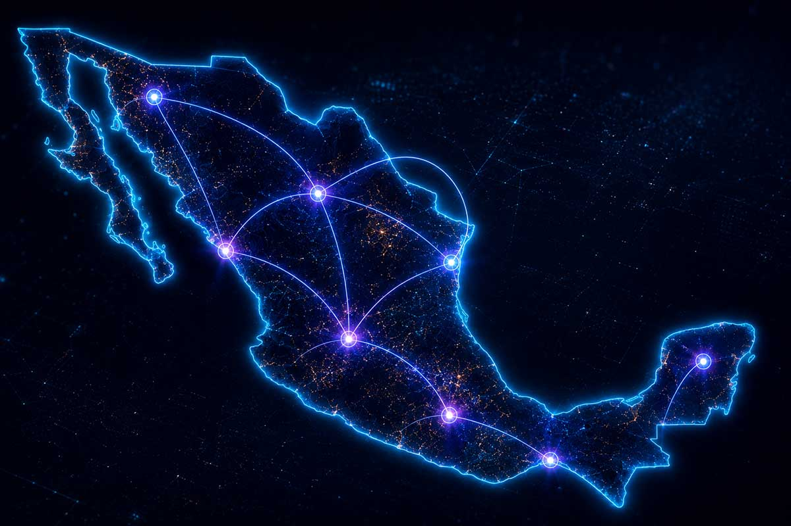
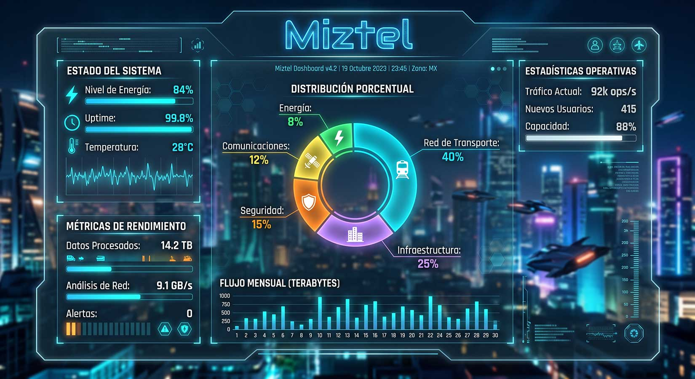
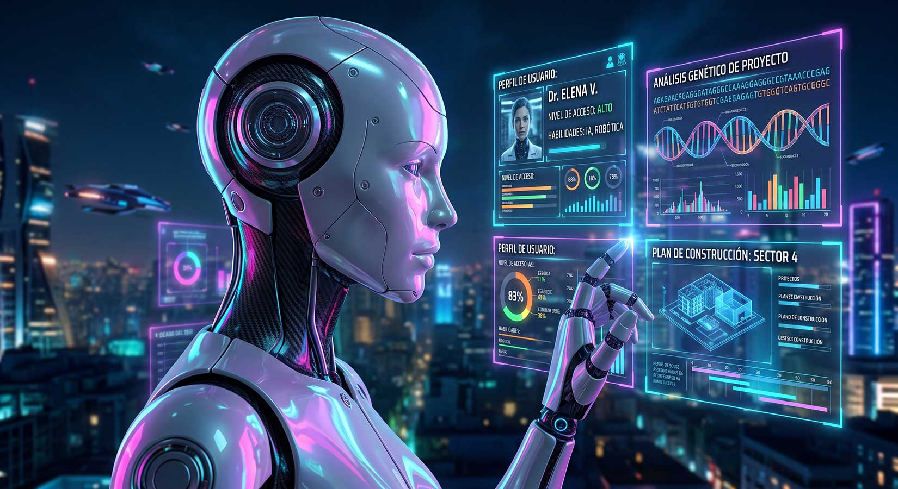
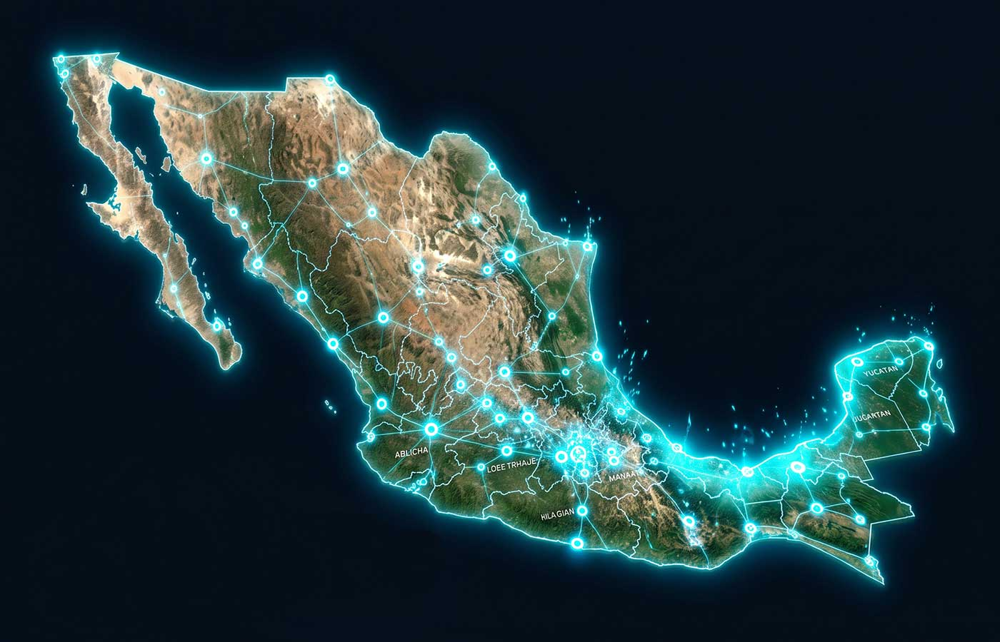

Conectividad que construye comunidad
ECOSISTEMA DE ECONOMÍA COLABORATIVA · TELECOMUNICACIONES · MÉXICO
Tu celular ya es parte
de todos tus días
Hablar, trabajar, estudiar, entretenerte, mantenerte conectado.
La telefonía dejó de ser un lujo: es vida cotidiana.
Pero estar conectado se volvió indispensable… y no todos tienen el mismo acceso.
La brecha digital y el valor
que siempre va a las mismas manos

Millones de personas sin internet móvil. Otras pagan de más por su servicio.
Cada recarga alimenta una industria enorme.
¿O hay otra manera de organizarla?
No es otra telefónica.
Es un ecosistema
Alrededor de la conectividad puede existir una comunidad que se organiza para crecer.
Menos gasto en publicidad y burocracia: más valor permanece dentro de la comunidad.
Qué cambia y qué no cambia
Cómo usas tu celular. La necesidad de conectarte sigue igual.
Cómo se organiza el ecosistema alrededor de ese consumo.
Tres pilares, un solo proyecto
Telecomunicaciones
Infraestructura real para conectar personas.
Registro y transparencia
Blockchain para saber exactamente qué sucede en el sistema.
Comunidad
Personas que usan, recomiendan y hacen crecer el modelo.
Red real: Altán 4G / 5G
No inventamos la red desde cero: operamos sobre infraestructura existente.
El proyecto se concentra en el servicio y la comunidad, no en construir antenas.
Un libro contable digital
que no pide “confía en mí”
Los registros se almacenan de forma consultable y verificable.
En Miztel registra digitalmente tu participación dentro del sistema.
Trazabilidad: cada operación queda registrada.
Contratos inteligentes:
reglas que se ejecutan solas
Reglas predefinidas
Ejecución automática
Auditoría digital
Un certificado digital
de tu participación

El token identifica tu participación dentro del ecosistema.
No es algo que solo guardas en una wallet: representa tu lugar en la estructura.
Acredita a quienes sostienen el modelo desde sus primeras etapas.
Emisión limitada
¿A dónde va lo que genera el sistema?
Reglas auditables por diseño

La estructura está previamente definida: cada parte tiene destino fijo.
Blockchain permite que esas reglas se ejecuten y auditen digitalmente.
El valor permanece dentro del ecosistema y llega a quienes participan en él.
¿Competir contra gigantes
con una estructura mínima?
Modelo OPC — One Person Company, potenciado por inteligencia artificial.
- Asistentes digitales y chatbots 24/7
- Procesos administrativos automatizados
- Contabilidad, soporte y marketing digital

Hasta ~90% menos estructura
Oficinas, departamentos, cientos de empleados, procesos manuales.
Menos burocracia y costos operativos → más recursos al ecosistema.
Publicidad tradicional vs recomendación
Las telefónicas gastan enormes cantidades en TV, espectaculares y agencias.
Miztel propone que ese valor regrese a la comunidad vía recomendación.
2 millones de líneas = solo 1.3% del mercado
Crecimiento que se duplica, no que se improvisa
510 lugares estratégicos
Reposicionamiento automático
Empiezas con 1 registro · Nivel 8
Aumentas tu participación
El sistema te reposiciona a un nivel superior
El motor es el consumo real
Con 2M de líneas, millones de personas hacen algo simple: recargar su celular.
Ese consumo genera actividad económica real, y una parte de la utilidad se distribuye.
La lógica no depende de que alguien nuevo entre: depende del consumo.

Retribuciones estimadas del modelo
Constancia y visión de largo plazo
Con cien usuarios los resultados son pequeños; con dos millones, la historia es otra.
No es una carrera por la posición más alta: es construir una comunidad. Si la comunidad no crece, el ecosistema tampoco.
Quienes participan desde el inicio permanecen en la estructura que ayudaron a construir.
Conectividad mexicana,
comunidad global
La red y la operación son solo en México.
Pero la participación se gestiona digitalmente vía wallet: Argentina, Colombia, España…